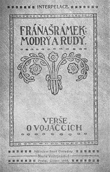

Šrámek z doby věznění
|
FRÁŇA ŠRÁMEK
* 19. 1. 1877 (Sobotka)
† 1. 7. 1952 (Praha)
Pro Šrámkovu tvorbu je typický antimilitarismus a opojení životem i přírodou. Zprvu se hlásil k anarchismu a spolupracoval s Neumannem. Později se spřátelil s Karlem Čapkem a docházel mezi pátečníky. Jeho umělecká tvorba má velmi blízko k vitalismu, naturismu a impresionismu. Psal povídky, romány, básně i dramata.
Šrámek strávil dětství v Sobotce, kam se vždy rád navracel a o níž s láskou psal. Jeho otec pracoval jako berní úředník a byl velmi často překládán z místa na místo. Většinou ho následovala celá rodina. První školní léta strávil Šrámek ve Zbirohu, gymnázium začal studovat v Písku, ale maturoval v Roudnici. Potom začal v Praze studovat práva, která nedokončil, protože ho zlákala dráha spisovatele.
V jednadvaceti letech nastoupil jednoroční vojenskou službu v Českých Budějovicích, která mu byla z trestu prodloužena, protože otevřeně projevoval anarchistické a antimilitaristické názory. Další problémy ho čekaly na vojenském cvičení. Za báseň Píšou mi psaní, stať Proti militarismu a účast na anarchistických demonstracích strávil dokonce několik dní ve vězení. Nevyhnul se ani 1. a 2. světové válce. V první z nich byl sanitním vojínem na jižní frontě v Itálii a Rumunsku.
|

Šrámek na Gellnerově karikatuře
Kde leží Sobotka, Zbiroh, Písek a Roudnice nad Labem?
Který méně známý spisovatel se také narodil v Sobotce?
Co víš o Písku a jeho pamětihodnostech?
|
Šrámkova poezie
Šrámkovo buřičství se nejzřetelněji odrazilo v prvních básnických sbírkách Života bído, přec tě mám rád a Modrý a rudý. Vrcholem jeho tvorby je vitalistický Splav, na který navazují méně významné sbírky Básně, Nové básně a Ještě zní. Poslední Šrámkova sbírka nese název Rány, růže. Posmrtně vyšly Poslední básně.
Sbírka Modrý a rudý byla konfiskována. Proč?
Humprecht u Sobotky
|
Fráňa Šrámek: Modrý a rudý
Do básnické sbírky Modrý a rudý zařadil Šrámek řadu skladeb ze své prvotiny Života bído, přec tě mám rád. Jádrem sbírky jsou protiválečné básně (Raport) a autorovo vyznání ze sympatií k anarchistickému hnutí (Píšou mi psaní). Šrámek opěvuje bohémský život, který odporuje konvenční morálce (Svatba). Modrá barva v názvu evokuje vojenskou uniformu, rudá symbolizuje anarchismus.
Fráňa Šrámek: Splav
Rozsáhlá básnická sbírka Splav (1916) je velmi různorodá. Obsahuje skladby lyrické i lyrickoepické. Velmi výrazný je motiv těsného sepětí s přírodou, který dává Šrámkovým veršům naturistický ráz, a s rodným krajem.
|

Co dalšího může symbolizovat červená a modrá barva?

Max Švabinský: Chudý kraj
Zaujala tě některá ze Šrámkových básní? Která? Proč?
Vyber si jakoukoliv Šrámkovu báseň, nauč se ji zpaměti a zarecituj ji svým spolužákům.
Vysvětli, proč sis vybral/a právě tuto báseň.
|
Šrámkovy prózy
První knihy, které Šrámek vydal, byly povídkové. Později vyšly v souboru Prvních jedenadvacet (Sláva života, Ejhle člověk, Sedmibolesti, Kamení, srdce a oblaka, Patrouilly). Otřesné válečné zážitky zachytil v knize Žasnoucí voják. Další povídkové sbírky zařadil do publikace Bouřky a duhy (Osyka, Klavír a housle). Některé z námětů zakomponoval do svých románů. První z nich – Buřiči zůstal nedokončen. Pro další Šrámkovy prózy je typická silná lyrizace, impresionismus a vitalistický přístup. Platí to o románech Stříbrný vítr, Křižovatky, Tělo i Past.
O čem vyprávějí romány Tělo a Past?
|
Fráňa Šrámek: Stříbrný vítr
Senzualistický román Stříbrný vítr líčí dospívání Jana Ratkina. Jeník si příliš nerozumí s otcem a citově se upíná k matce. S obdivem vzhlížel ke svému strýci, jehož sebevražda Jeníkem otřásla. Naivní a citově založený Ratkin postupně poznává skutečný život. Z venkova odjíždí do města studovat gymnázium. Odmítá pochybnou morálku dospělých, zvláště matky svého spolužáka Huga, která podvádí manžela. Spřátelí se se studentem Zachem, se kterým navštíví veřejný dům. Zamiluje se do Aničky „posedlé“, ale ta o něj nestojí.
|
Líbila se ti ukázka ze Šrámkova Stříbrného větru? Proč?
Jak člověk pozná, že už je dospělý?
V čem se liší dospívání od dospělosti?
Srovnej studentský život s životem dospělých.
Co si myslíš o výroku „nevěř nikomu, komu je přes třicet“?
|
Šrámkova dramata
Šrámkovy divadelní hry vynikají lehkostí a lyričností. Sám je považoval za komedie. Vrcholem jeho dramatické tvorby je jednoaktovka Červen a hry Léto nebo Měsíc nad řekou. Odlišný charakter má satira o prvních dnech po rozpadu Rakouska-Uherska v říjnu roku 1918 nazvaná Hagenberk.
O čem je divadelní hra Léto?
Která další dramata Šrámek napsal?
|
Fráňa Šrámek: Měsíc nad řekou
Divadelní hra Měsíc nad řekou pojednává o prchavosti mládí a jeho nenaplněných tužbách. Na abiturientském večírku se scházejí bývalí spolužáci a přátelé Hlubina a Roškot. Nespokojený Hlubina bilancuje svůj život. Zmohl se pouze na malé papírnictví, ale původně chtěl být spisovatelem, na gymnáziu dokonce napsal román Měsíc nad řekou. Roškot je naopak velmi úspěšný. Při této příležitosti se seznamují i jejich děti Slávka Hlubinová a Villy Roškot. Villy se o Slávku uchází, ale ta ve svých 27 letech již rezignovala na bláhovou lásku a odmítá ho.
|

Písek
Charakterizuj postavy Slávky a Villyho.
Charakterizuj atmosféru jejich rozhovoru?
Jak by podobný dialog probíhal v současnosti?
|
Z další tvorby
Šrámek je autorem několika zajímavých statí – Proti militarismu, Život... Vyšla i jeho korespondence z bojišť – Listy z fronty a dopisy jeho přítelkyni a pozdější manželce Miloslavě Hrdličkové – Listy z léta.

Šrámek jako voják na italské frontě
|
Fráňa Šrámek: Listy z fronty
Šrámkovy Listy z fronty podávají autentické svědectví o 1. světové válce. Tento zapřisáhlý antimilitarista byl sanitním vojínem na jižní frontě a zúčastnil se bojů v Itálii a Rumunsku.
Fráňa Šrámek: Život
V krátké stati Život popsal Šrámek svůj náhled na svět.
|

Šrámkův antimilitaristický článek zveřejněný v Práci spolu s básní Píšou mi psaní
Komu Šrámek adresoval svůj dopis?
Co v něm popisuje?
Jak se Šrámek dívá na život?
Souhlasíš s jeho názory? Budeš se jimi řídit? Proč?
|
Internetové stránky
Šrámek, přehled děl
Šrámek, medailon
Šrámek: Stříbrný vítr, ukázka
Šrámek: Modrý a rudý, celá sbírka
Exkurze
Sobotka
Písek
Filmy
Stříbrný vítr, režie V.Krška
Měsíc nad řekou, režie V.Krška
Tipy
Šrámkova Sobotka, literární soutěž
|
Doporučená četba
Buriánek, František: Fráňa Šrámek, Melantrich, Praha 1981
Buriánek, F.: Národní umělec Fráňa Šrámek, SNKLHU, Praha 1960
Fráňa Šrámek ve fotografii, Československý spisovatel, Praha 1959
Hejnová, Marie: Knížka o Milce, Kruh, Hradec Králové 1985
Knap, Josef: Fráňa Šrámek, Borový, Praha 1937
Polan, Bohumil: Fráňa Šrámek, básník mládí a domova, Svoboda, Praha 1947
Resler, Kamil: Buřiči a Stříbrný vítr, Křižovatky díla Fráni Šrámka, Československý spisovatel, Praha 1952
Soukup, Lubomír: Fráňa Šrámek a jižní Čechy, Jihočeské nakladatelství, České Budějovice 1981
Šrámek, Fráňa: Básně, Československý spisovatel, Praha 1954
Šrámek, F.: Červen a jiná dramata, Československý spisovatel, Praha 1959 (Hagenberk, Soud, Ostrov veliké lásky, Dvě království, Zvony, Pravda)
Šrámek, F.: Když léto přihrává, Borový, Praha 1944 (Léto, Měsíc nad řekou, Plačící satyr)
Šrámek, F.: Listy z fronty, Československý spisovatel, Praha 1956
Šrámek, F.: Listy z léta, Východočeské nakladatelství, Hradec Králové 1966
Šrámek, F.: Měsíc nad řekou, Československý spisovatel, Praha 1967
Šrámek, F.: Modrý a rudý, Stříbrný vítr, Léto, Splav, NLN, Praha 2000
Šrámek, F.: Sedm krásných mečů, Československý spisovatel, Praha 1962
Šrámek, F.: Sláva života, Československý spisovatel, Praha 1977
Šrámek, F.: Žasnoucí voják, Československý spisovatel, Praha 1955
|
Připravte si a předveďte recitační pásmo o Šrámkovi a jeho tvorbě. Nezapoměňte na ukázky z jeho veršů, próz, dramat i dalších děl.
Obálka Šrámkovy knižní prvotiny Sláva života
|
|